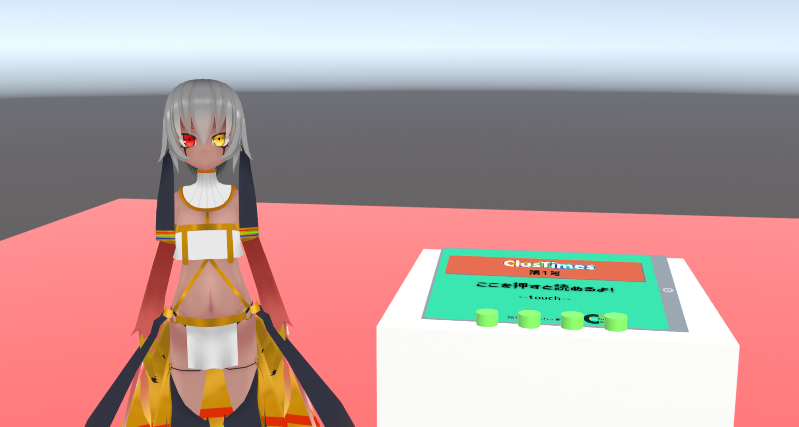

テキストモード/画像モードを切り替え

春のガチ恋体験!? virtual入学式２
昨年に引き続き、2021年もこのイベントがやってきた！
5/30（日）20:30～「virtual入学式２～ガチ恋☆新歓Fes!～」がclusterにて行われました。
出演者（敬称略）は、主催のぽっちゃりえる、司会の田中桔梗(ききょうぱんだ)に加え、草羽エル、バーチャル美少女ねむ、ジビエーズ（沙影＆ドコカノうさぎ）、Milia、甘野氷の８名。カメラマンはレイブンさん。
今回の目玉企画は“ガチ恋距離”での部活勧誘パフォーマンス。来場者を「新入生」に見立て、演者は「各部活の部長」という設定です。
“ガチ恋距離”とは草羽エルさんがバーチャルアイドル活動で実践されている演出手法のひとつで、clusterのパーソナルエリア機能を利用し、演者との「二人きり感」を生み出す方法です。
上の画像のように来場者側が所定の位置に立ちパーソナルエリアを最大値に設定することで、周囲のアバターをほぼ全員非表示にすることができ、ステージに立っている演者と自分だけの空間に！
部活はそれぞれ、「ぽちゃLOVE(部)」「料理研究部」「創作部」「書道部」「軽音部」「バ美肉部」「バドミントン部」。
どんな勧誘が行われたのか、バーチャル美少女ねるさんのYouTubeチャンネルにアーカイブが残っており、そちらでもガチ恋距離を疑似体験できますのでぜひお楽しみください！
.png)
また、実際に参加してみてガチ恋距離のワクワクドキドキ感を感じられたのは勿論ですが、それと同時に各部活には
.png)
出演者一人一人のバーチャルにかける想いや生き方という深いテーマも感じました。
バーチャルの楽しさをエンターテイメントとして提供しながらも、何かを始める人の背中を押すような、まさに「入学式」と呼ぶにふさわしい素晴らしいイベントでした。
来年の「virtual入学式３」ではどんな企画が行われるのでしょう。今から待ち遠しいですね。何回でも入学しちゃいましょう！
(紅花）
xR転職合同相談会開催
2021年6月3日・4日の2日間に渡ってxR(AR/MR/VR)企業に興味のある方を対象とした、複数企業合同の相談会『xR転職合同相談会』がclusterにて開催されました。
2019年から始まり、第3回目の開催となる『xR転職合同相談会』。
今回の開催はVR空間でライブイベントを楽しめるアプリケーションを開発する“株式会社VARK“や、VRクリエイティブスタジオ事業を手掛ける“ambr”など、数々の有名xR企業が登壇しました。
また、今回の『xR転職合同相談会』では5分間のLTで自分を企業にアピールできる『就職希望者LT大会』も同時開催。
3Dモデラー志望の登壇者やVR/ARライブの制作を行うクリエイターの方など、才能のあるユーザーがPRに励んでいました。
コロナ禍もあり、世間的にもオンライン面接やオンライン企業説明会がメジャーとなりつつありますが、VRを活用した就職説明会・VR面接も、これからさらに活発に行われていきそうです。
(バーチャルライフマガジン)
フロア温めますか?
6月4日はW@さんの誕生日であり、W@さんのcluster初ライブの記念日です。
イベント説明文によると「なんかめでたい日なんでなんちゃってDJやってみます。」とのこと。
イベントは22:30開場です。我々は真相を確かめるためライブ会場へと向かいました！
すると、彼の愛用しているアバター、白い正方形のようなデザインをしているワールドにｗ＠さんはいました。
しばらくすると……？
「じゃあ はじめます」
聞き覚えのある楽曲が！
いっせいにエモーションをする観客、そう、ライブがはじまりました！
定番曲から少しマニアックなチョイスの選曲まで！
開場はとてもとても熱気冷めやらぬ状態になりました。
「つなぎ」が初心者と思えないレベルのうまさで、曲調が変化するたび、ビックリマークのエモーションがでていました。
しかも、この一連のパフォーマンスはVRゴーグルをかぶりながらのものだったのです。
イベント来場者はなんと122人という大盛況。
感激！またライブやってほしいですね。
（坂本ふろすと）
バーチャル渋谷&原宿レポ
4月29日から5月31日まで開催されたバーチャル渋谷によるシブハル祭。新しい生活はバーチャルでを合言葉に連日多くの人がバーチャル渋谷へ足を運んだ。
また、開催に合わせてイベントも行われた。中でも3月31日から5月31日までShibuya under
Scrambleでは期間中総勢100組、計20日間のアーティストによるライブは圧巻だった。
そして、プレゼント企画として渋谷のシンボルとも言えるハチ公前で写真を撮るスタンプラリーも同期間実施。1名にはゲーミングPC等のセットが当たるもので、気付くのが遅かった私は応募を逃しもったいないと思った。
その他複合商業施設modiも公開。リアルでは今は行くのが難しいが、収束すれば回復の兆しも見えるだろうか。
続いて5月25日から5月31日まで開催されたバーチャル原宿POPDAYOUT。新しいスキに出会う場所を合言葉に、ポップな街並みが印象的。
人気スニーカーatoms、商業施設ラフォーレ原宿では実際に商品が展示されていた。
イベントステージでは有名人やインフルエンサーによるトークやライブが、ワールド内では日替わりで登場するラブライブの新ユニットLiellaのメンバーを撮るバーチャルスナップが行われていた。イベントは終了したが、ワールドは両方とも残っているので是非興味のある方は足を運ぶのはいかがだろうか。
(りお)
向日葵畑のラジオ体操
みなさん土曜日は何時ごろにおきますか？
clusterの土曜日午前9時は特別な時間帯です。夜のほうが人が多いclusterですが、土曜日の9時から9時10分の間週末の朝をさわやかに迎えた人たちが集います。
「フルトラ勢」という全身動かせる装置を付けた人たちにも会うことができます。
スマホの人たちは、ラジオ体操のとおりにアバターをうごかすことができないので、首をまわしてみたり、ジャンプをしてみたりして参加しています。
ご存知の通り、ラジオ体操は短時間の体操です。ラジオ体操に集う人たち、通称cluster ラジオ体操部の人たちは、さっとあつまってさっと解散することもあれば、あとから人が来て体操をすることもあります。
ラジオ体操部のみなさんからのコメント
・みんなとのすがすがしい土曜日の朝(*´▽｀*)
・ちゃんと寝て朝起きたらたいそうしようね
・ラジオ体操で良きいちにちを！
・VRは筋肉
・9時に起きてレッツ体操！
なお、最近はイベントにてスクワットをしている人たちもいる様子、筋肉は裏切らない、仮想世界にも筋肉をという、筋肉愛がclusterにもあるようです。
（so)
ききょうぱんだお誕生日会
5/29（土）22時～clusterにて、「ききょうぱんだのお誕生日会」が開催されました。
“ききょうぱんだ”こと田中桔梗(たなかききょう)さんは、小説「恋するプリンセス」の作者であり、VR演劇団「ぱんだ歌劇団」の座長も務めるマルチクリエイターなVTuberです。
司会兼カメラマンを務めたぽっちゃりえるさんとの楽しい掛け合いから始まった本イベントは、バースデーソング歌唱や本人お手製巨大迷路レース、お祝いイラスト紹介、初オリジナル曲【ヒカリの中で】の先行披露と、盛りだくさんの内容で行われました。
終始、あたたかい人柄の桔梗さんらしいアットホームな雰囲気で、エモーションやコメント、Vアイテムで思い思いに桔梗さんの誕生日がお祝いされました。
その様子はYouTubeでも同時配信され、祝福コメントも会場へたくさん届いており、桔梗さんの愛され具合がうかがえました。気になる方はぜひYouTube「ききょうぱんだ」へ！
そんな桔梗さんはつい先日、NPO法人バーチャルライツ公認「VR文化アンバサダー」計11名のうちの１人に選出されました。今後の活躍に期待が高まります！（紅花）
あなたとcluster #1
今号から連載企画が始まります。clusterで出会った人たちにひとことインタビューをしていきます。
clusterを始めたきっかけ、普段の過ごし方、今後やってみたいことにフォーカスし、みなさんのclusterへの想いを覗き見てみましょう。
第1回は弊誌編集長でもあるオリゴ糖を取材します。ワールドクリエイターやイベンターとはまた違った視点からclusterを盛り上げようとする彼がどのようなことを考え過ごしているのか、聞いてみました。
【オリゴ糖さんの回答】
Q1.clusterを始めたきっかけは？
A1.スマホでできるバーチャルSNSはないかと。
Q2.普段clusterでどのように過ごしてる？
A2.人のいるワールドに行って、色んな人と喋ってます。
Q3.今後clusterでやってみたいことは？
A3.私自身スマホ勢なので、スマホ勢に向けた、様々な活動をやっていきたいです。
自身もスマホからログインしているオリゴ糖。スマホからプレイできるバーチャルSNSであるclusterの魅力を伝えていこうとする彼の今後の活躍に期待ですね。
（滝竜三）
